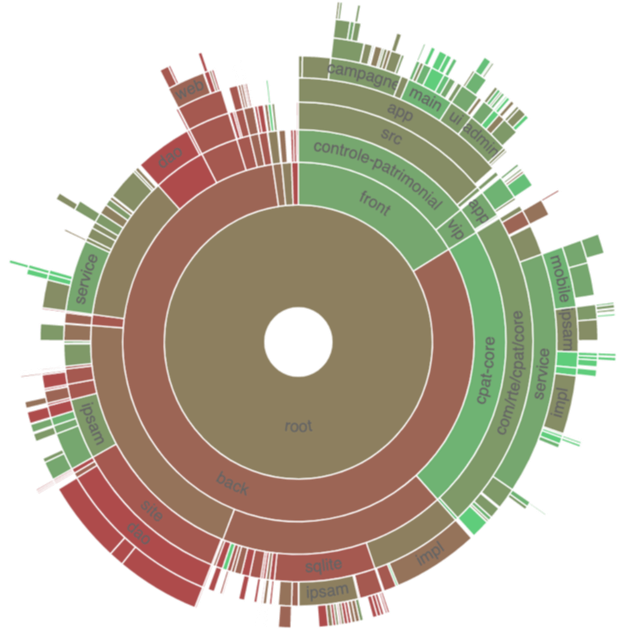

The Staff coverage
The staff coverage is a build-in feature of Fitzhì. An important concern regarding your IT legacy is the staff, more precisely the staff relevant and available to maintain and develop your applications.
Do you have the best team with the required skill & functional knowledge, that prevents anything from falling through the net ? You need to be able to answer questions such as
- Who has worked on this project ?
- Do we still have someone available to fix this issue in this antique application from your legacy ?
- Does the technical mastery of the actual team cover all parts of the project ? Or do we face some risks there ?
To fulfill that purpose, Fitzhì manages a staff registry with all of your developers. They are registered as `active` or `inactive`, `external` or not.
Fitzhì will crawl the history of your Git repository, gather your commiters and their operations and generates charts like this one below.

- The full green slices are packages with sufficient active developers.
- Dark green are desert. Cross your fingers that nothing appends there.